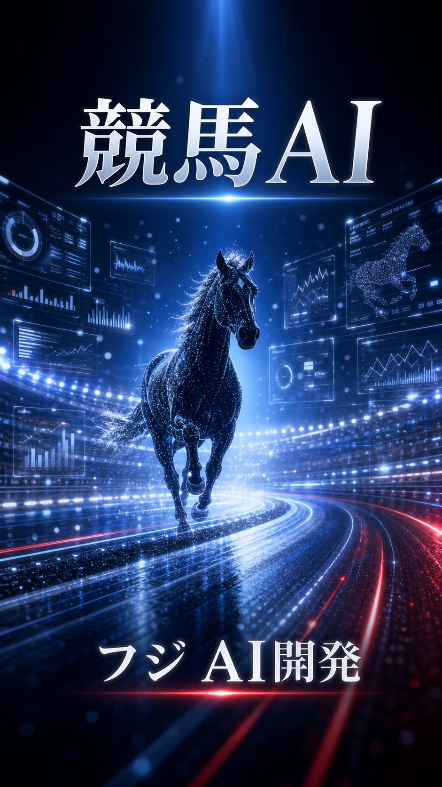
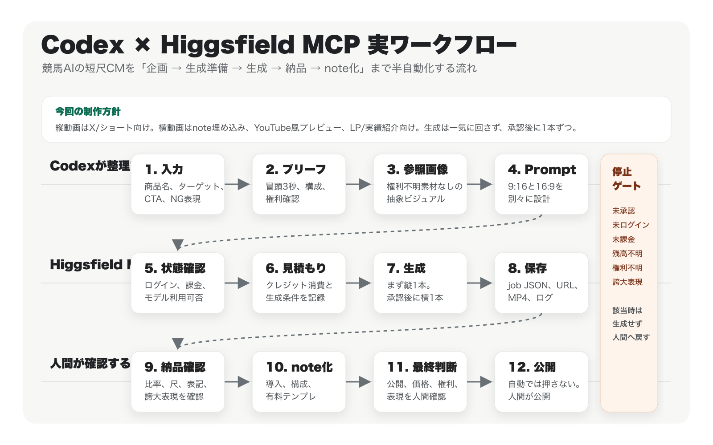

AI動画制作 / Codex / Higgsfield MCP / Seedance
Codex × Higgsfield MCPで、AI CM制作を半自動化する方法

AI動画生成は、もう「プロンプトを入れたら映像が出る」段階まで来ています。ただ、商用に近い短尺CMを作るときに本当に面倒なのは、動画生成そのものだけではありません。
この記事では、CodexとHiggsfield MCPを使って、短尺CM制作の企画、参照画像、Seedanceプロンプト、MCP実行準備、納品チェック、note記事化までを半自動化する流れを紹介します。
Higgsfield / Seedanceで実際に動画を生成するには、Higgsfieldの課金アカウントと利用可能なクレジットが必要です。ブリーフ作成、プロンプト作成、note下書き作成、納品チェックリスト作成までは課金前でも準備できます。
今回作るもの
今回の題材は、競馬AIというサービスのCMです。ターゲットはXの競馬ユーザー。狙いは、タイムラインで流れてきたときに「AIでここまで綺麗なCMを作れるのか」と思ってもらうことです。
最後は「フジ AI開発」を印象に残す構成にします。実在の競馬場、実在馬、実在騎手、第三者ロゴ、Web上の権利不明素材は使いません。
後で埋め込み
workspace/outputs/final-cm-9x16-v1.mp4
後で埋め込み
workspace/outputs/final-cm-16x9-v1.mp4
実際のワークフロー図
今回の流れを図にすると、こうなります。動画生成をいきなり始めず、先にブリーフ、権利確認、縦横別プロンプト、停止条件を固めます。

AI動画生成だけでは足りない理由
AI動画生成は便利ですが、CM制作として見ると、生成ボタンを押す前後に必要な作業がかなりあります。
- 商品名やサービス名の表記が途中でぶれる
- 読み方や発音がプロンプトに入っていない
- 9:16と16:9を同じプロンプトで作ってしまい、構図が崩れる
- 画面内テキストが長すぎて読めない
- 権利不明の画像やロゴを使ってしまう
- 根拠のない「No.1」「必ず勝てる」のような表現が混ざる
- 生成ログやジョブ情報が残らない
CodexとMCPの役割分担
Codex側で自動化するのは、主に制作管理と文章化です。入力テンプレート、CMブリーフ、9:16/16:9プロンプト、MCP用リクエストJSON、納品前チェック、note下書きまでを整理します。
Higgsfield MCP側では、アカウント確認、モデル確認、コスト見積もり、Seedance生成を行います。未ログイン、未課金、クレジット不足の場合は、そこで止めます。
縦動画と横動画で何を変えるのか
| 項目 | 9:16 縦動画 | 16:9 横動画 |
|---|---|---|
| 主な用途 | X、ショート動画、スマホ閲覧 | note埋め込み、YouTube風プレビュー、LP、実績紹介 |
| 最初の目的 | スクロールを止める | 世界観と制作力を見せる |
| 構図 | 中央に被写体、上下に短い文字 | 左右に余白、横方向に情報を展開 |
| 注意点 | 小さい文字を入れない | 縦用プロンプトをそのまま流用しない |
今回のCMブリーフ
注意したのは、競馬AIだからといって、的中保証や利益保証のように見せないことです。「必ず勝てる」「回収率が上がる」「勝率No.1」のような表現は、根拠なしには入れません。
Seedance用プロンプトの考え方
縦動画は、0-3秒、3-7秒、7-11秒、11-15秒の4場面で作ります。横動画は同じメッセージを扱いつつ、左右に広がる構図と、note/YouTube風プレビューに使いやすい締めフレームを意識します。
- 0-3秒: 光の競馬場と「競馬AI」
- 3-7秒: AI分析パネルとデータ粒子
- 7-11秒: Xで思わず止まるようなCM表現
- 11-15秒: 「フジ AI開発」で締める
生成前に止める条件: CM内容が未承認、プロンプトがproposal状態、Higgsfield未ログイン、未課金、クレジット不足、権利不明素材あり、誇大表現あり。このどれかに該当したら生成しません。
実際に作られるファイル
workspace/
assets/
reference-keiba-ai-v1.png
workflow-diagram-v1.png
briefs/
cm-brief.md
prompts/
seedance-9x16-v1.txt
seedance-16x9-v1.txt
outputs/
final-cm-9x16-v1.mp4
final-cm-16x9-v1.mp4
note/
note-ready-draft-v1.md
note-preview.html
logs/
cost-estimate-9x16.json
cost-estimate-16x9.json
job-9x16-v1.json
job-16x9-v1.json納品前チェック
生成後は、動画が開けるか、比率が合っているか、尺が合っているか、商品名が正しいか、画面内テキストが長すぎないか、的中保証や利益保証が混ざっていないかを確認します。
生成AIの動画は、文字、ロゴ、細部、人物、商品形状が崩れることがあります。そのため、最終公開前の確認は人間が行います。
有料部分では、実案件で使いやすいテンプレートをまとめます。無料部分で全体像を見せ、有料部分でそのまま使える型を渡す設計です。
有料部分で渡すもの
Codexに投げるマスタープロンプト
ユーザーの商品・サービス情報から、Higgsfield MCP / Seedance用の短尺CM制作ワークフローを作ってください。
必ず以下を作成してください。
- 入力テンプレート
- CMブリーフ
- 参照画像プロンプト
- 9:16 Seedance用プロンプト
- 16:9 Seedance用プロンプト
- Higgsfield MCP実行前チェック
- コスト見積もり記録
- 生成ジョブ記録
- 納品前チェック
- note記事下書き
ルール:
- noteは公開しない
- Higgsfield生成はユーザー承認後
- 課金状態とクレジット確認前に生成しない
- 権利不明素材を商用CMに使わない
- 縦動画と横動画のプロンプトを分ける
- 再生成は原則2回まで縦横動画の生成順序
1. 9:16用プロンプトを承認する
2. 9:16のコスト見積もりを取る
3. 9:16を1本生成する
4. 表記、尺、構図、権利、誇大表現を確認する
5. 必要なら9:16を最大2回まで再生成する
6. OKなら16:9用プロンプトを承認する
7. 16:9のコスト見積もりを取る
8. 16:9を1本生成する
9. note記事に縦横両方を埋め込む
10. 公開前に人間が最終確認するまとめ
CodexとHiggsfield MCPを組み合わせると、短尺CM制作はかなり整理できます。重要なのは、動画生成だけを自動化するのではなく、ブリーフ、権利確認、予算、縦横別プロンプト、ログ、納品チェック、note記事化までを一つの流れにすることです。
Higgsfieldの課金アカウントが必要なのは、実際にSeedanceで動画を生成する段階です。その前に、Codexで設計と下書きを固めておけば、課金後に迷わず1本目の生成へ進めます。